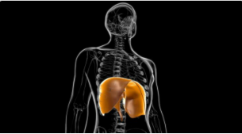

Diaphragm Anatomy and Differential Diagnosis
Introduction
The diaphragm is an important muscle of inspiration and expiration, and it can be affected during periods of mechanical ventilation. Complications after intubation include diaphragm elevation, paralysis and weakness. To understand these complications, it is necessary to understand the basic anatomy and function of the diaphragm. Thus, this course, the first in a series on diaphragm rehabilitation after mechanical ventilation, will provide an overview of the diaphragm before introducing complications associated with intubation.
Practicalities
Hours of Learning - No deadlines are applied to this course and it can be started and completed in your own time according to your personal schedule. We expect the required elements to take around 1 hour depending on your schedule and learning style. Additionally there are many optional resources provided and if you choose to review these the course could take longer to complete.
Types of Activities - Reading Physiopedia pages, journal articles, book chapters. Watching videos. Attempting quizzes. Participating in an international discussion forum.
Certificates - At the end of the course, when you have completed all of the required elements, you will be able to download a certificate of completion and 0.7 Plus points will be added to your personalised learning dashboard.
